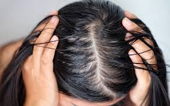
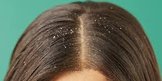
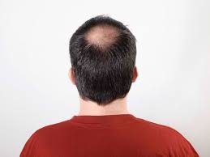
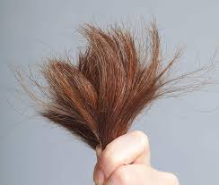

Rambut Kering
Gejala: rambut terasa kasar, rapuh, dan mudah patah akibat kekurangan kelembapan.
Rambut Rusak
Gejala: struktur rambut melemah dan sulit diatur karena penggunaan bahan kimia atau alat pemanas.
Rambut Rontok
Gejala: kehilangan rambut berlebih yang dapat disebabkan oleh stres, pola makan, atau faktor genetik.

Rambut Berminyak
Gejala: rambut terasa lepek dan lengket akibat produksi minyak berlebih dari kulit kepala.

Ketombe
Gejala: serpihan kulit kepala yang mengganggu dan dapat menyebabkan rasa gatal.

Kebotakan Parsial
Gejala: area kepala tertentu kehilangan rambut sehingga tampak botak sebagian.
Rambut Mengembang
Gejala: rambut sulit diatur, terlihat tebal, dan sering kali mengembang karena kelembapan udara.

Rambut Bercabang
Gejala: ujung rambut terbelah yang membuat rambut tampak kusut dan sulit diatur.